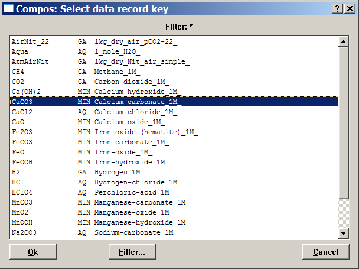
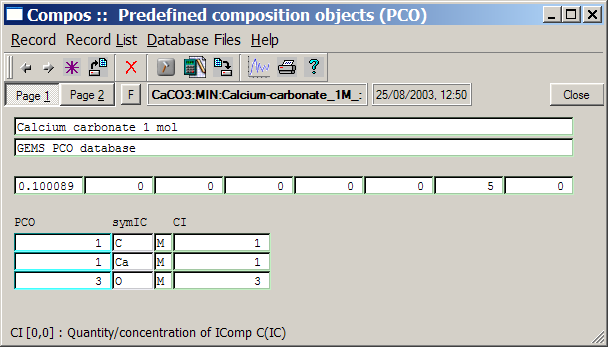
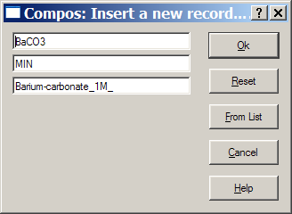
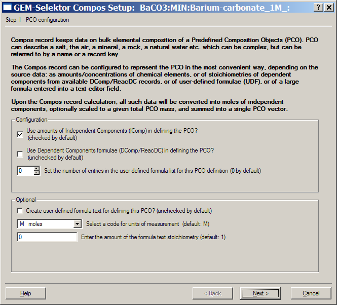
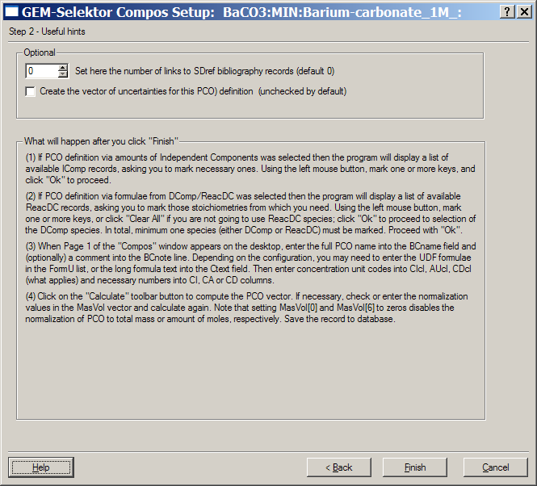
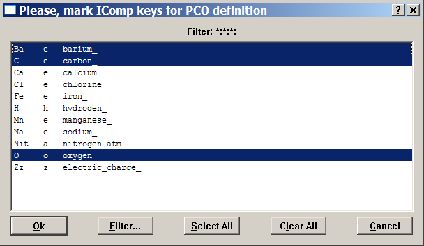
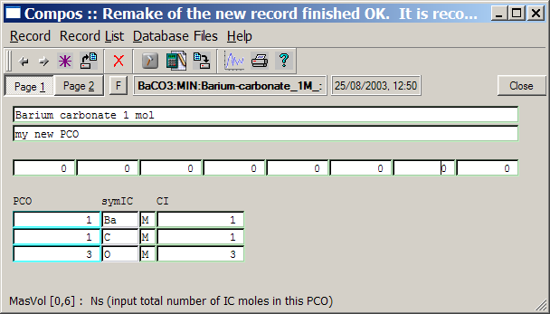
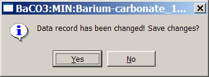
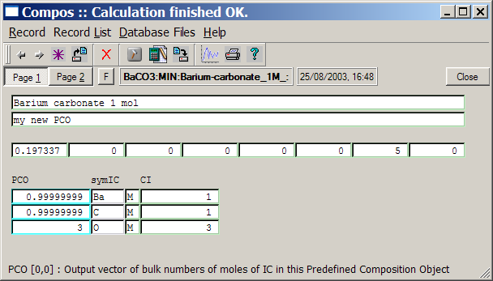

Previous Page Back to Start Page
(36) Adding a Predefined Composition Object
Predefined composition objects (PCO) help the user create "recipes" for the bulk composition of the chemical system because PCO can contain a complex stoichiometry (e.g. a rock or seawater composition) that can be addressed as certain amount of a single item. The built-in GEMS database contains a collection of commonly used PCOs stored as Compos records.
Here, we will learn how to
create new Compos records and add them to your project database. As
usual in GEM-Selektor, the easiest way is to open a similar record and
then use it as a template to "clone" a new Compos record. As we have
added barium with its aqueous species
and a BaCO3 mineral to the "Carbonat" project, let us create
a
PCO for BaCO3 composition.
A suitable
template would be an available Compos record "CaCO3". To open it in the
Compos window, get into the "Database Management" dialog and click the
"Predefined Compositions (Compos)" button, then use the "Display
selected record"  toolbar button
to get the list of available Compos records:
toolbar button
to get the list of available Compos records:

Find and
select a "CaCO3" record key, as shown above, and double-click on it or
click
"Ok".
This will get the PCO definition for calcium carbonate into the Compos
window:

This simple
PCO is made up from 1 mole of calcium, 1 mole of carbon and 3 moles of
oxygen, entered into the "CI" column. The resulting
PCO stoichiometry (in mole amounts) is visible in the "PCO"
column to the left of the column of element symbols "symIC".
One
mole of this PCO (5 moles of elements in total) has a mass 0.10089 kg.
Please, note that adding some amount of this PCO to GEM chemical system
recipe does not automatically mean that the mineral calcite (CaCO3)
will appear in positive amount in the calculated equilibrium state. The
purpose of PCOs (many of which resemble stoichiometries of
chemical species or pure phases) is solely to facilitate construction
of recipes for the bulk composition of chemical systems of interest.
Now, execute the "Record" "New(Clone)..." menu command. Modify the key of the Compos record to be created as shown below and click "Ok":

Next, a
"Compos Setup" wizard appears; there is nothing to re-configure in this
case, so just click "Next >" to proceed.

On the
appearing second page of the wizard, click "Finish" because there is
also nothing to change:

After that, the program will display a list of available IComp records
and ask to mark those to be included in the PCO definition. Click on
calcium to unmark it and on barium to mark it (using left mouse button)
as shown below.

Click on the
"Ok" button to proceed. This brings you back
to the Compos window, where you have to edit comment lines and the "CI"
column.
Important:
enter zeros into the first and the seventh field of the "MasVol"
row, to prevent that the new PCO will be normalized to 0.10089 kg mass.
The Compos window should now look like this:

To complete
data in the new record, click on the "Calculate record data"  toolbar button or press F9 hot key or
execute "Record" "Calculate" menu command. A warning
appears:
toolbar button or press F9 hot key or
execute "Record" "Calculate" menu command. A warning
appears:

Click on the
"Yes" button to save the data that you have edited. The necessary
calculations will be performed, and you will see the Compos window
again with a new (molar) mass 0.197337 kg.

click on the "Save current record" toolbar
button  or execute the "Record" "Save" menu command to save data into the
database file. Close the Compos window when finished.
or execute the "Record" "Save" menu command to save data into the
database file. Close the Compos window when finished.
In the same
way, you can "clone" Compos records for any desired "recipes"; as an
exercise, create in addition a PCO for BaCl2. More
sophisticated variants that require re-configuration of PCO structure
are described in the gm_compos.html
manual.